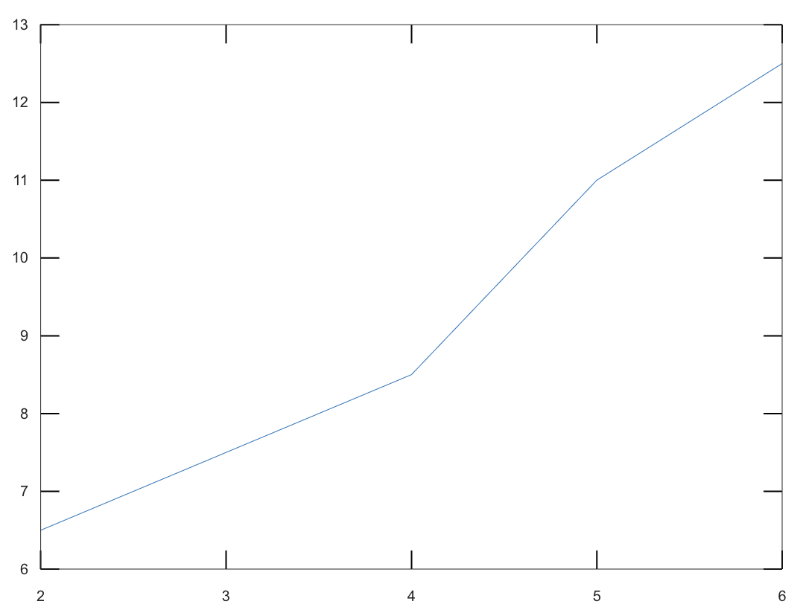

這章的內容中，Octave能幫上的忙大概就只有基礎的矩陣計算、1-2的向量內外積、2-2的nullspace的basis。剩下的都需要你們自行判斷居多。
我其實是希望你們用課本上的方法做出QR分解的，現在這邊只是教一個讓你們拿來對答案用的方法而已。
這個指令的主要用法是 [Q, R] = qr(A)，指令中的Q跟R就是我們要的。
稍微注意一下，關於QR分解，如果矩陣A是正方形矩陣的話，標準一向是統一的。
但在A是 $m \times n$ 時，有兩派標準。
第一派是我們課本上的做法，要求 Q 是$m \times n$ ，且 R 是 $n \times n$。
第二派是Octave上的做法，要求 Q 是$m \times m$ ，且 R 是 $m \times n$。
A = [1, 1; 0, 1; 1, 1]
[Q, R] = qr(A)
輸出結果
A =
1 1
0 1
1 1
Q =
-0.707106781186547 0 -0.707106781186547
0 1.000000000000000 0
-0.707106781186547 0 0.707106781186547
R =
-1.414213562373095 -1.414213562373095
0 1.000000000000000
0 0
這部分我不打算認真教學，因為我希望你們真的學會課本上的操作，然後使用矩陣的方法解決。
不過我還是稍微提一下，在octave裡已經有許多成熟的逼近方法，單單是The least square method就有不止一種，有興趣的人可以參考一下這個網頁。
這部分我不打算細教，講個觀念，然後給範例讓你們直接用就好了。畫圖主要是用plot(x,y)這個指令。
其中的 x, y都是向量。假設 $x=[x_1, x_2, ..., x_n]$，而 $y=[y_1, y_2, ..., y_n]$，
則畫出來的會是n個點$(x_1, y_1), (x_2, y_2), ..., (x_n, y_n)$，並且用折線連起來，舉例來說
a = [2; 4; 5; 6]
b = [6.5; 8.5; 11.0; 12.5]
plot(a,b)
就會畫出像是下面這樣的折線圖。

而如果用 plot(a,b,"o") 會只畫出點，而不是折線，並且用o來表示點的位置。(p.s. plot(a,b,"*") 會是用*來表示點)
a = [2; 4; 5; 6]
b = [6.5; 8.5; 11.0; 12.5]
plot(a,b, "o")
就會畫出像是下面這樣的點圖。
而函數圖的畫法是先給出x軸的範圍，密密的標上點，然後用y=f(x)的形式列出y軸座標，然後再畫出線即可。
這邊要教一個表示法，
a:b:c，這是表示一連串的值，開始是a，然後每間隔b會給一個直，直到超過c就停。舉例來說：
5:2:16
輸出結果
ans =
5 7 9 11 13 15
另外，在y=f(x)的寫法時，次方的部分要用
.^ 而不只是
^。這是一個叫做『element-by-element power operator』的特殊用法。
有興趣的可以看
這個網站，或是查關鍵字『octave 元素對元素 點次方 點乘』可以找到更多資訊。
所以若是想畫出$y=2x^4+7x^3+8x+2$在範圍$-4\leq x\leq 2$的話，是以下這樣的。提醒一下，在式子最後加上分號，可以讓octave不要把結果印出來，免得列出太多無用資訊。
x=[-4:0.01:2];
y=2*x.^4+7*x.^3+8*x+2;
plot(x,y)
輸出結果